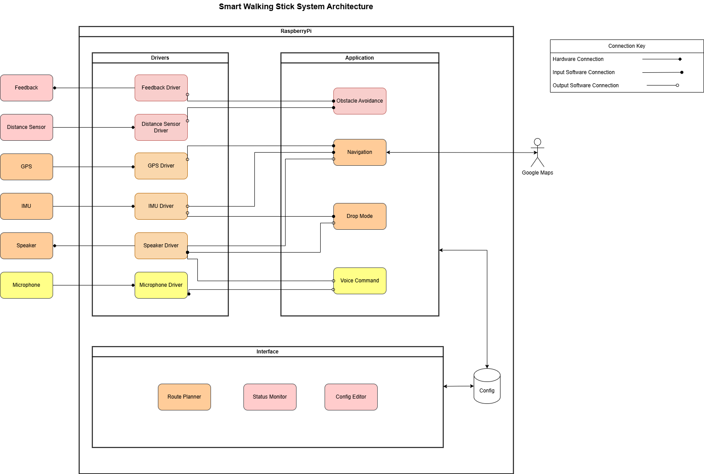

Below is a diagram of the initial system architecture designed:

Hardware Components
- Feedback Module – Provides haptic or audio feedback to the user.
- Distance Sensor – Detects obstacles in the walking path.
- GPS Module – Tracks location for navigation.
- IMU (Inertial Measurement Unit) – Detects motion and orientation.
- Speaker – Provides auditory feedback and instructions.
- Microphone – Captures voice commands from the user.
Software Layers
The system is structured into Drivers, Application, and an Interface.
Drivers
Each hardware component has a dedicated driver that enables communication between the physical device and the software system. The connection symbol determines the flow of data.
Application Layer
This is where the main logic of the smart walking stick is implemented:
- Obstacle Avoidance – Uses data from the distance sensor to help the user navigate around obstacles. User is notified using the haptic feedback sensor.
- Navigation – Uses GPS and IMU data for route planning and guidance, by integrating with Google Maps.
- Drop Mode – Detects if the stick is dropped using IMU data and triggers an alert via the speaker.
- Voice Command – Processes voice inputs for hands-free interaction.
Interface Layer
This is allows the user to communicate with the application layer. This will be in the form of a web application which will send and recieve data via a config database.
- Route Planner – Allows users to set a destination, which will communicate with the navigation application.
- Status Monitor – Allows the user to monitor the health of the sensors.
- Config Editor – Adjusts system settings of the applications and the sensors.
 1.9.1
1.9.1